Up & Cross selling Rocket Fresh to expand all retail products in Post Cart
CX enhancementShipped 🚀Nov 20’ - Dec 21’
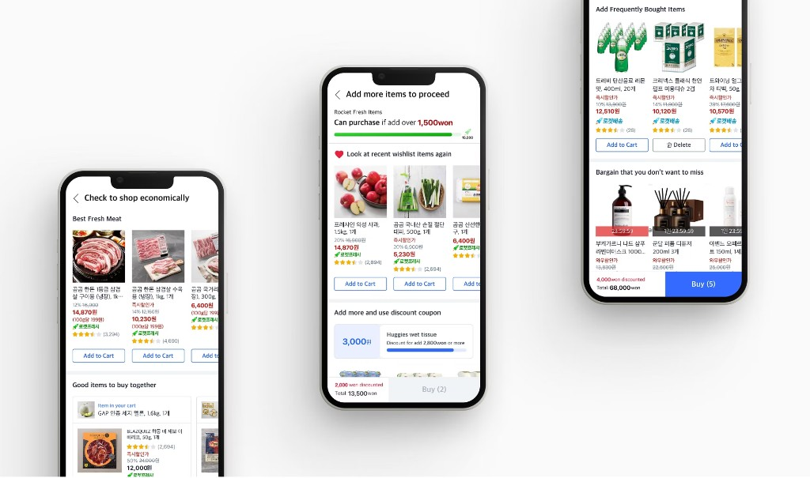
Overview
Just as Coupang shoppers want to easily find what they need to order, we help them with the ‘Interstitial page’, which offers a variety of options to buy just before checkout, allowing them to choose forgotten or interesting products.
App
Available on iOS & Android
About Coupang
Coupang is a large e-commerce platform with a rapidly growing Rocket member base, offering Rocket Delivery in Korea. Coupang offers retail services such as Rocket Fresh (grocery), Rocket Delivery, and Rocket WOW.
My role
I was one of two designers on the Rocket Fresh team that created the Interstitial page. I worked with stakeholders: a product owner, FE and BE engineers, two Fresh marketers, two fulfillment operators, a data analyst, and two content strategists. I drove UX execution and experience alignment across the product. My contribution was UX that balances a customer-centric experience with a business-driven product vision.
The work was conducted to improve Rocket Fresh, a fresh grocery service for WOW members, and by December 2021 it was also applied to the core funnel of all retail products and delivered strong business impact.
Background
Between January and November 2019, data showed that customers often realize they’ve forgotten items on their Fresh orders shortly after checkout.
Key findings include:
Quick Reorders: Over half (50.5%) of same-day Fresh second orders were placed within 30 minutes of the first. (compared to 60, 120, and over 120min)
Average order value (AOV) for the same day 2nd orders is 25,101 GMV with 2.65 product count.
Portion of canceled order and reorders after cancellation is 6% and 17%.
Friction Points: The introduction of a minimum shipping threshold on April 12, 2019, caused a 5% drop in these same-day orders, and an increase in cancellations and reorders.
This highlights a key customer pain point: the current system makes it difficult and costly for customers to add forgotten items, leading to a frustrating experience. To achieve our H2 business goals, we must address this friction to make the Fresh service more profitable and scalable.
Problem Statement
Customers purchasing Fresh items sometimes forget what they need to purchase because online customers tend to not always plan ahead with a shopping list nor actively seek items.
Original Fresh Item Checkout Flow
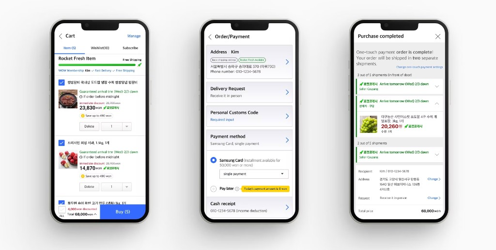
Customer Job
Who : WOW members who purchase Fresh items
When : I am ready to purchase Fresh items in my Cart
What : I want to be reminded of items that I might have forgotten and saving opportunities that I might have missed whether out of mistake or ignorance. So I can have a chance to make adjustments or additions to Cart and shop smart so that I don’t have to make another purchase for missed items and don’t have to return items after finding out I missed items on promotion.
Root Cause
The core problem is a fragmented and disjointed product discovery experience. While various recommendations exist, they are not presented in a cohesive, centralized way. This prevents customers from easily grasping the full breadth and quality of selections available on Coupang, ultimately hindering their ability to find new products.
Opportunity
There is a great opportunity to remind customers missed items before they checkout
To make it easier for customers to add forgotten items at the last minute, we should introduce a dedicated page for these suggestions after the cart but before final checkout.
The current cart page is already crowded with various functions and low-visibility recommendation widgets at the bottom. Adding more recommendations here would only create clutter and be ineffective.
A new interstitial page, placed after the cart, could serve as a focused and purposeful space for last-minute additions. This would allow us to present relevant recommendations without overwhelming the core cart page, improving both the customer experience and the likelihood of them adding more items.
1st TO-BE Fresh Item Checkout Flow
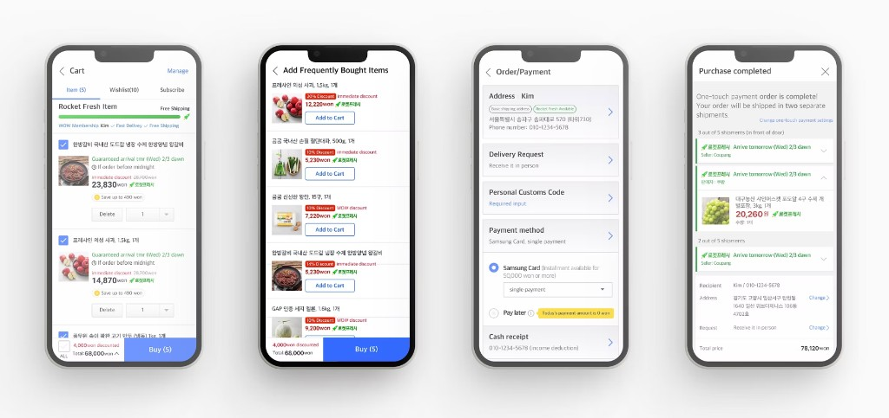
Ideations
It is a fact that adding a step after the cart can raise customer tension. First, we listed the five most frequently bought items vertically to ensure that the hurdle of this step was not significant, as well as to train and educate customers to familiarize themselves with this step. (FBI in the interstitial reminder page increased Fresh AOV by ~2.5% (654 KRW) or by ~0.45% (258 KRW) sitewide.)
We then refined the ideas of various item sets that customers are willing to purchase additionally in the form of horizontal widgets. We set up MVPs to modify them and produce end products that meet all user needs and the business goal.
Cross-selling, which adds products that can be purchased along with products that are added by the customer
Up-selling, which recommends upgraded products and products with higher margin rates than products ordered by customers
Interstitial page: what to show and when
Interstitial recommendation logic. Triggers: Over-threshold and Fresh items only. These feed Personalized Reminder Set
(frequently bought: Missed FBI, Better Value Bundle, Missed Coupon Promotion, Missed Wishlist, Complementary Item Reco,
Missed OOS Alter.) and Generic Reco Set (Missed Lifesaver, Seasonal, Time Deal, Meat, Missed Instant Discount,
Lifecycle Item Reco, Popular Item Reco).
condition:Over-thresholdFresh Items only
Personalized Reminder Set
Missed FBI
Better Value Bundle
Missed Coupon Promotion
Missed Wishlist
Complementary Item Reco
Missed OOS Alter.
Generic Reco Set
Missed Lifesaver
Seasonal
Time Deal
Meat
Missed Instant Discount
Lifecycle Item Reco
Popular Item Reco
FBI : Frequently Bought items
We ideated highly personalized sets of items, such as recommending a better bundle set or alternatives based on the cart items, recommending alternatives to out-of-stock items, and exposing the products that customers are interested in. Customers can benefit from a narrow set of relevant items based on their Fresh purchase intentions. We reminded them and increased cross-selling, increasing the opportunities of buying more with one purchase. On the other hand, for aimless customers, various generic sets are recommended such as lifesavers, popular items, lifecycle items, easy-to-miss products, and multiple types of discount products to increase the cross-selling rate, or recommend meat or seasonal products for high business impacts.
Fresh Item Checkout Flow with Interstitial Page
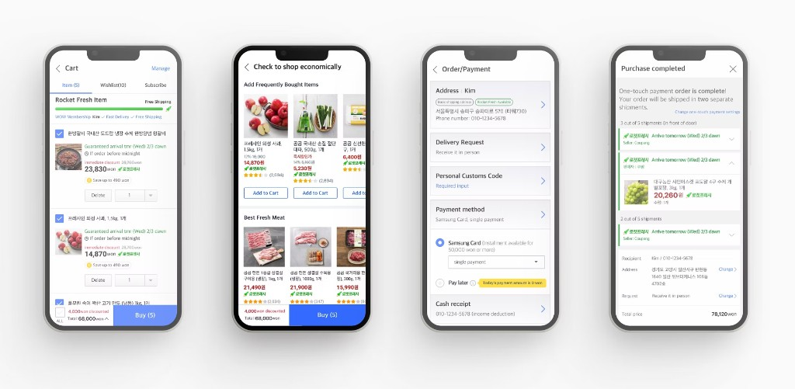
Prototype
Design Widgets
While some widgets such as FBI, Timed deal, and meat were existing widgets imported from the Fresh gateway, I’ve worked on new widgets; Missed OOS alternatives, Coupon Promotion, Missed wishlist Item, Missed Instant Discount, Lifecycle widgets to make it scalable for long terms. Those existing widgets were also tailored to Interstitial page to ensure what customers are doing.
Design widgets: Personalized Reminder Set flows to Missed FBI, Better Value Bundle, Missed Coupon Promotion,
Missed Wishlist, Complementary Item Reco, Missed OOS Alter. Generic Reco Set flows to Missed Lifesaver,
Seasonal, Time Deal, Meat, Missed Instant Discount, Lifecycle Item Reco, Popular Item Reco.
Personalized Reminder Set
Missed FBI
Better Value Bundle
Missed Coupon Promotion
Missed Wishlist
Complementary Item Reco
Missed OOS Alter.
Generic Reco Set
Missed Lifesaver
Seasonal
Time Deal
Meat
Missed Instant Discount
Lifecycle Item Reco
Popular Item Reco
Interstitial widget prototypes
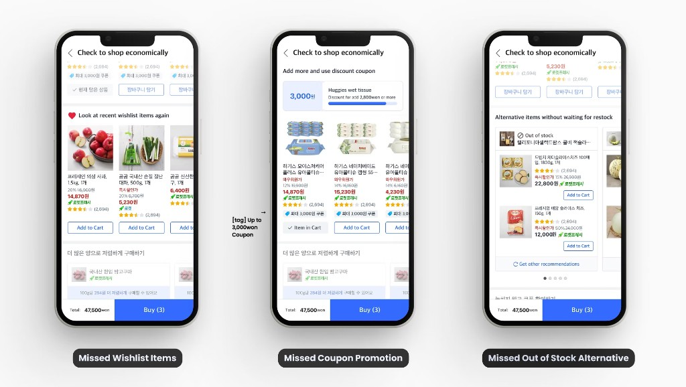
Usability Test
Takeaways
Two to four usability tests were conducted based on customer feedback for individual widgets. The design was modified to reduce confusion and resolve problems. (General default group for UT is Coupang WOW members, female aged from 25 to 45 and AOS users.)
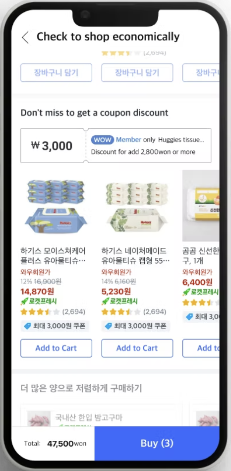
Missed Coupon Promotion
First UT Insight
Lack of Coupon Info
Customers did not figure out if the coupon was already downloaded. They saw the widget and understood that products related to the products in the cart were recommended regardless of the coupon.
Lack of existing product connection
It lacks the connection between the coupon-applicable product in the cart and the coupon-applicable product in the widget, and the price suggested in the coupon is based on the new threshold condition.
With the above problems, a second design below has been ideated to find a solution. Re-expose the products that the customer puts in the cart to the widget. Additionally, add a progress bar so that customers are aware it is a coupon for the product in the cart. The design change makes them understand that they must meet thresholds. The second design UT was conducted to propose the assumption.
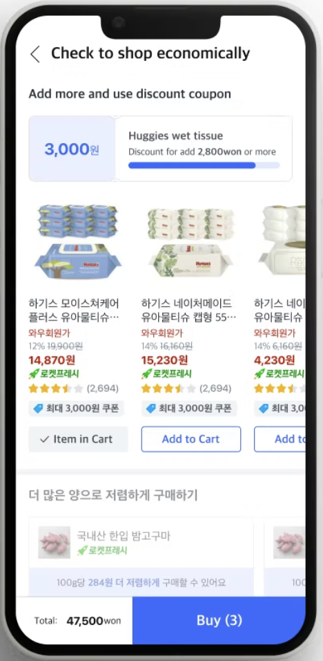
Second UT Insight
Acknowledge of the coupon info
With the info given in the coupon area, customers can understand which coupon, threshold, how much the cart contained as a price gauge, and acknowledge the coupon applied status.
Recognize the product
Customers recognized what action needs to be taken to meet the coupon threshold. They figure ‘current cart item’ is displayed with a new disabled button at the first. After adding a new coupon applicable item, they can easily identify that both the current cart item and the new item are eligible for the coupon.
As a result, it was launched a version that does not show "current cart products" and suggest products sorted by popularity rather than sorted by price threshold gap. Through the AB testing, it was possible to further grasp the needs and perceptions of customers that were not found in UT.
Identify the detail elements to display. e.g. Coupon amount, amount to spend, expiration time, cart items
Understand product requirements, logic and constraints, and available options.
Dependency and consistency.
Guide corner cases for each widget creation in order to easily process for developers:
Sold-out, Invalid
Closed to time out
Time out – closed
Before open – valid
Ineligible → don’t show widget
Design spec
Widget specification sheets
Detailed UI specs for three interstitial widgets: layout, carousel rules, states, and flows. One sheet is visible at a time — tap a tab or use the arrows to switch.
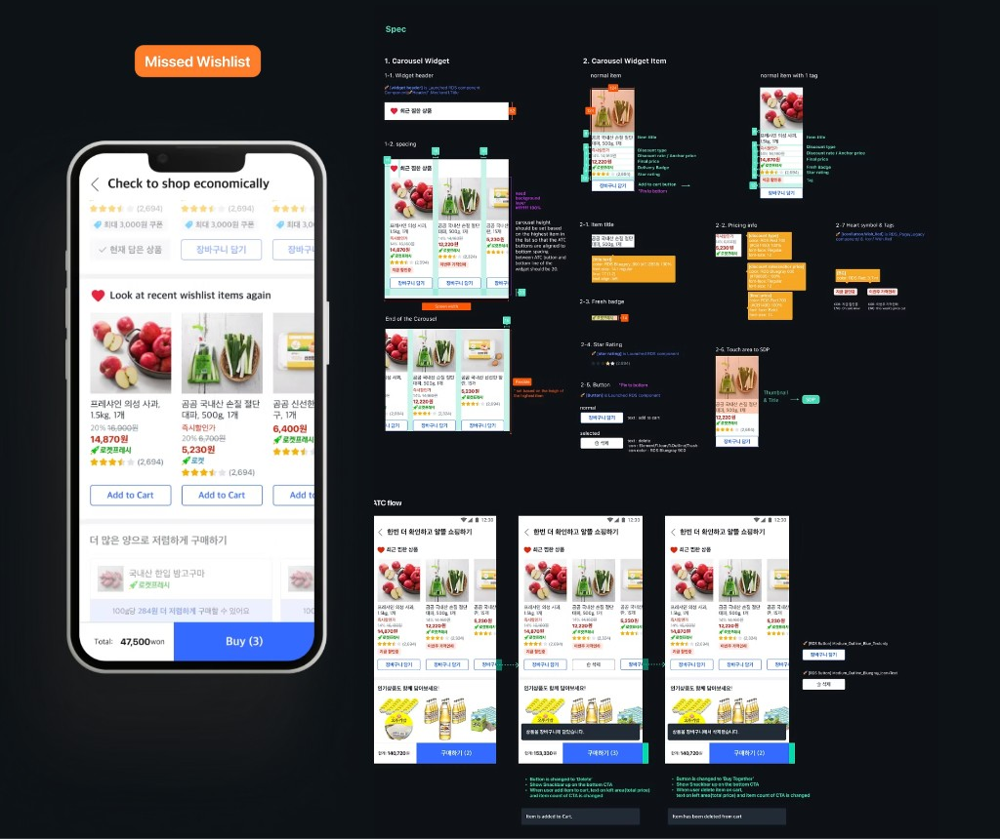
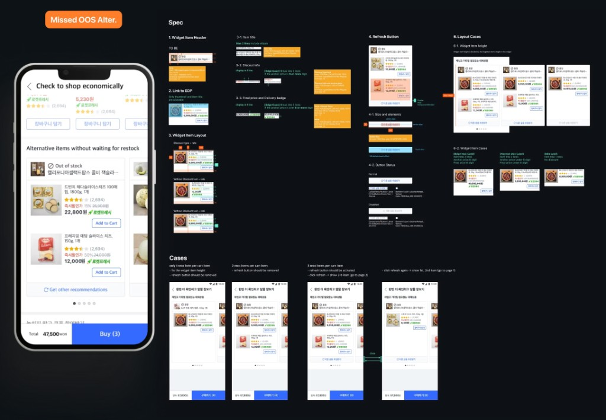
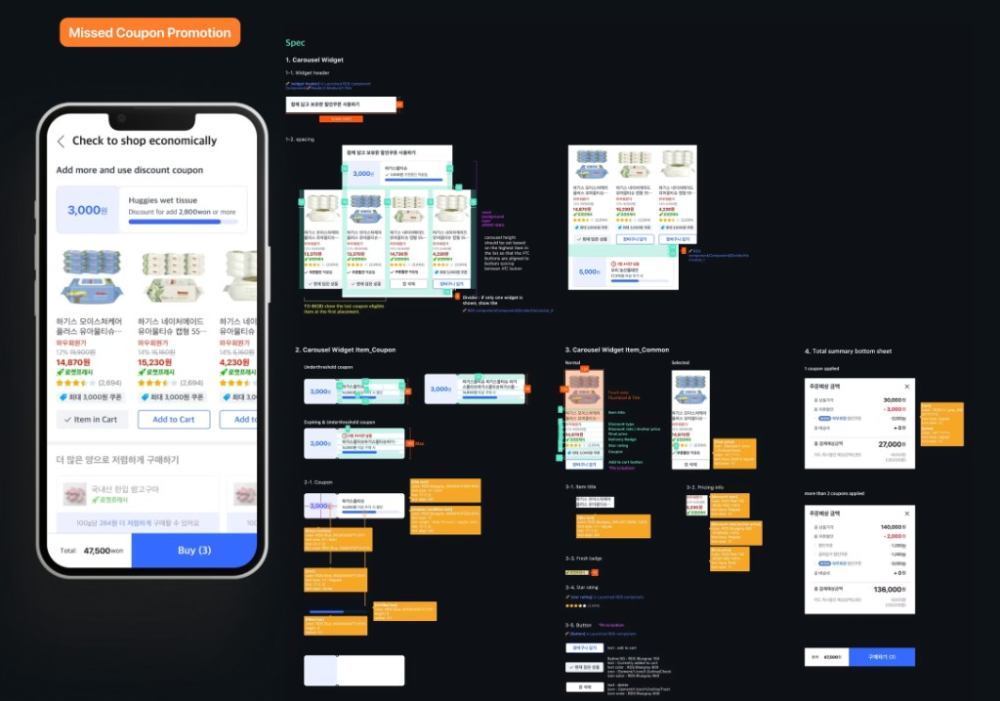
UX improvements
Follow-on work & launch
Added Item Tracker (usability learnings and evergreen tracker), interstitial refactoring across widgets, and representative widget performance for Frequently Bought Items, Best Fresh Meat, seasonal Fresh, time-limited “bargain” deals, complementary “buy together” reco, and better-value bundle nudges.
Added Item Tracker
Live usability tests of our reminder widgets surfaced three issues: shoppers struggled to confirm what they had added without leaving the interstitial, could not change quantities in place, and had trouble seeing how new items changed the checkout total.
Hard to verify cart additions without breaking flow off the interstitial.
No in-page quantity controls; users had to navigate away to adjust counts.
Updated totals were easy to miss before tapping Buy.
We benchmarked other apps and converged on a compact summary of selected lines plus a clearer breakdown of the total before checkout. After further UT, we shipped an evergreen tracker with small thumbnails and a quick path to change quantity from the same surface.
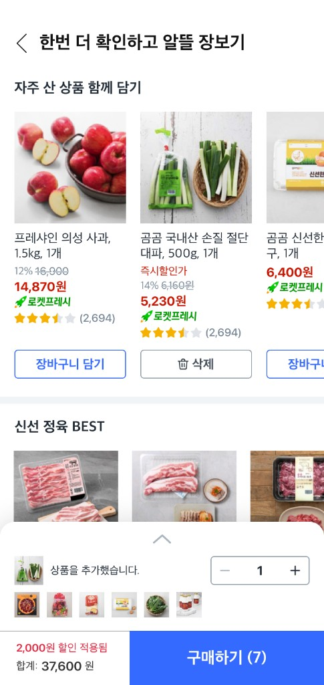
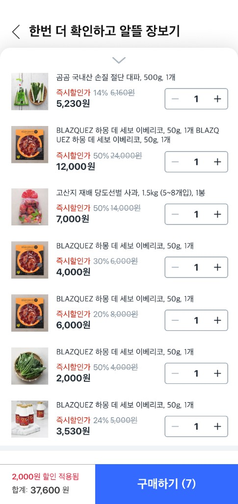
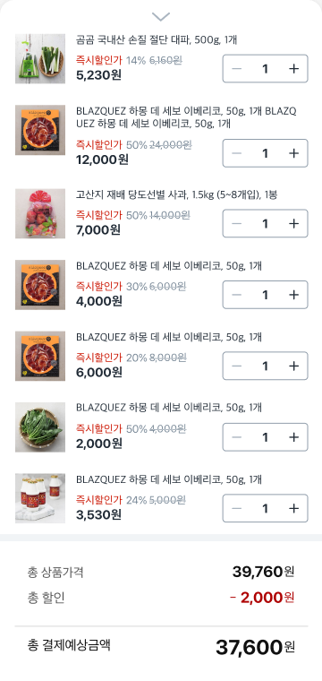
Launched design
Interstitial refactoring and widget integration
We integrated and optimized across a total of 13 widgets to oversee end-to-end creation quality and define exposure conditions for each widget so they perform better.
6 widgets ship in the interstitial, with the same priority on both Android and iOS—lifting Cart AOV.
AOS: Significant lifts in Fresh AOV (≈323 KRW sitewide, ≈50 KRW more than other variants) and Fresh GMV (≈13 KRW sitewide), with about ≈3.5% exposure from total traffic. (Given that ≈7% of all checkouts are Fresh-only, that is about half of Fresh-only checkouts.)
iOS: Highest lift in Fresh sitewide AOV of ≈140 KRW and Fresh sitewide GMV of ≈8 KRW, with minimal impact on Fresh buyer conversion drop of ≈0.08% sitewide and Fresh orders per customer drop of ≈0.28% sitewide.
1. Add Frequently Bought Items
Missed frequently purchased items reminder
AOV lift ≈ 654 KRW
Conversion ≈ 10.6%
Abandonment ≈ 0.8%
Exposure ≈ 4.4% of site traffic
2. Best Fresh Meat
Generic meat item recommendation
AOV lift ≈ 258 KRW (est.)
Conversion ≈ 2.3%
Abandonment ≈ 0.9%
Exposure ≈ 3.8%
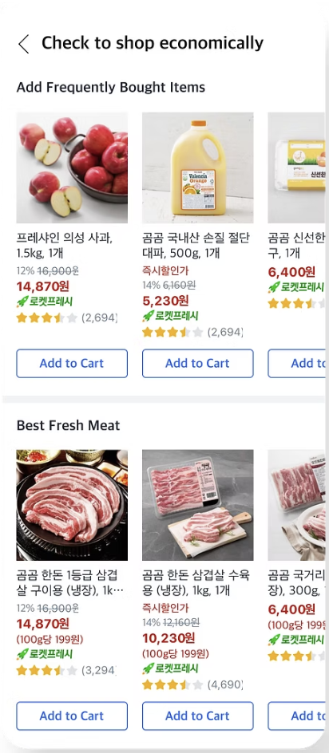
3. Best time to get seasonal Item
Generic recommendation for seasonal Fresh items.
AOV lift ≈ 356 KRW (est.)
Conversion ≈ 3.8%
Abandonment ≈ 0.9%
Exposure ≈ 3.8%
4. Bargain that you don’t want to miss
Generic recommendation for limited-time deal items with limited-availability messaging for FOMO (purchase urgency). Shown when no other personalized widgets qualify.
Personalized from purchase history and items in the cart. Surfaces complementary items with functional messaging.
Conversion ≈ 0.7%
Abandonment ≈ 0.5%
Exposure ≈ 3.1%
6. Buy more at a lower price
Personalized from cart contents. Emphasizes a better-value bundle for the same product at a lower unit price (not only “larger pack, lower per-unit”), with benefit messaging.
Conversion ≈ 9.6%
Abandonment ≈ 0.9% (est.)
Exposure ≈ 0.6%
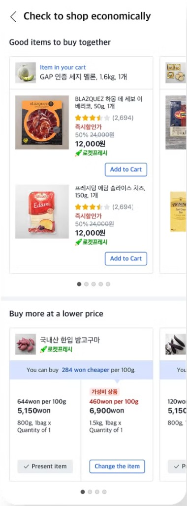
Impact
Checkout Interstitial Post Cart is exposed for ≈90% of Fresh-only cart checkouts—≈7.2% of all Coupang checkouts, or ≈1.3M checkouts weekly.
Fresh rolled out the Interstitial page with significant lifts in Fresh AOV (≈323 KRW sitewide, ≈50 KRW more than other variants) and Fresh GMV (≈13 KRW sitewide), at about ≈3.5% exposure from total traffic (first test).
Among widgets, FBI recommendations performed best, accounting for ≈70% of conversion and AOV lift (cart size up with GPPU; AOV up to 2.5).
Extending Checkout Interstitial to all Fresh-only cart checkouts produced ≈281 KRW and ≈130 KRW sitewide Fresh AOV lift respectively (total sitewide AOV lift ≈411 KRW).
Coverage analysis shows a meaningful AOV opportunity for Direct Buy: ≈3.4% of all Coupang checkouts (about half the volume of Fresh-only cart checkouts).
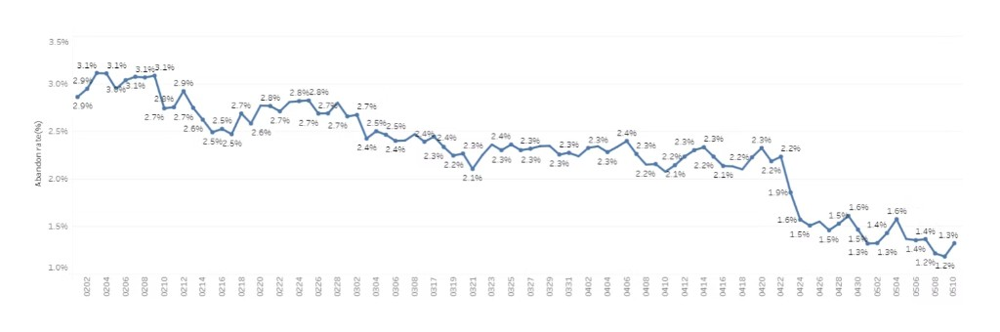
Fresh buyer conversion drop for Checkout Interstitial (post cart) was a concern initially, but checkout session abandonment returned toward pre–Checkout Interstitial levels.
Session abandonment fell from ≈3% to ≈1.3% over time as customers became familiar with the new flow.
After Fresh had validated what this page could do, we began shaping a strategy to bring the same interstitial experience to more product categories—and with that, the next chapter of the product opens.
Expansion
Ideations
The Interstitial page proved effective: sitewide Fresh AOV lifts of ≈281 KRW and ≈130 KRW respectively (total sitewide AOV lift ≈411 KRW). Customers often forgot Fresh items they still needed or discovered interest in recommendations. We explored where else the Interstitial could remind them before checkout. (Session abandonment fell from ≈3% to ≈1.3% over time as people got used to the flow.)
To what & When?
Over-thresholdFresh Items only
Personalized Reminder Set
MAX. 5 Frequently Bought Items
Missed FBI
Better Value Bundle
Missed Coupon Promotion
Missed Wishlist
Complementary Item Reco
Missed OOS Alter.
Generic Reco Set
Missed Lifesaver
Seasonal
Time Deal
Meat
Missed Instant Discount
Lifecycle Item Reco
Popular Item Reco
Added Item Tracker
Under-threshold+Fresh Items only
Interstitial Page for All Categories
Missed FBI
Time Deal
Popular Item Reco
Under-threshold+Checkout for Direct Buy on SDP
Widget mix
Missed FBI
Better Value Bundle
Missed Coupon Promotion
Missed Lifesaver
Meat
Post Cart validation: initial triggers and widget sets, then expansion scenarios toward broader category coverage.
Expansion
Under-threshold Checkout
Shoppers who try to check out quickly with an under-threshold Fresh cart hit a blocking popup that only sends them to Fresh home. That flow does not help them close the threshold gap, does little to narrow what to add, and after more time spent hunting for filler items many abandon.
Original Under-threshold Flow on Cart
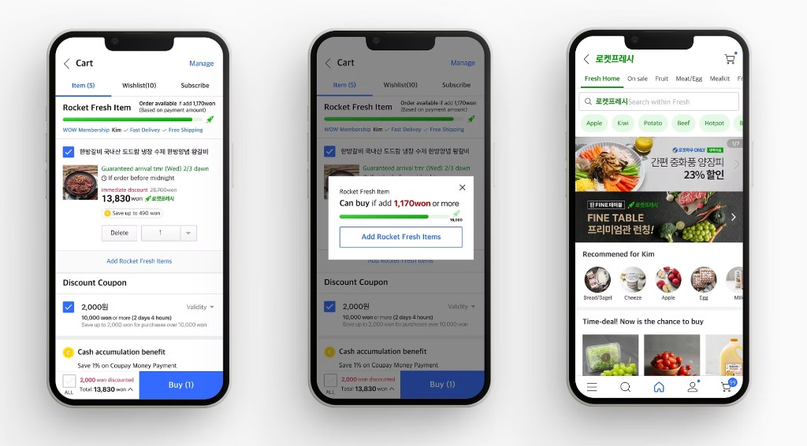
If we surface a highly personalized list when someone tries an under-threshold Fresh checkout, they can fill the delivery gap with items they already need or want—lifting Fresh AOV, GMV, and buyer conversion.
Define Requirements
Definition of info to show
Under-threshold message or indicator and over-threshold message and indicator
Recommended items to make completing the purchase easier
Add product button matched to context
Orderable (over-threshold) conditions
Redirection: path to explore more Fresh product
Final purchase CTA states aligned to threshold
Ideate
I reused the gauge and top message on the Interstitial and adjusted the primary CTA so shoppers could focus on adding items to close the gap, with Fresh home as a secondary path when nothing fit. After UT we fixed copy on add-to-cart and snackbars, then prioritized five high-likelihood widgets (FBI, better-value bundle, missed coupon, life-saver, saved item). Routing them through this Interstitial funnel won an A/B test and shipped.
Expansion
Prototype
Side-by-side under-threshold vs over-threshold: fixed-top progress and status copy, recommendation rails, and a Buy CTA that stays disabled until the bar clears the minimum—so orientation, add-to-cart paths, and checkout eligibility stay obvious.
Expansion
Added five widgets to under-threshold checkout
We stacked the highest-intent modules in one surface: frequently bought together, better-value bundle, WOW coupon ladder, household life-savers, and recent wishlist—each with clear add paths so shoppers could close the gap without leaving the funnel.
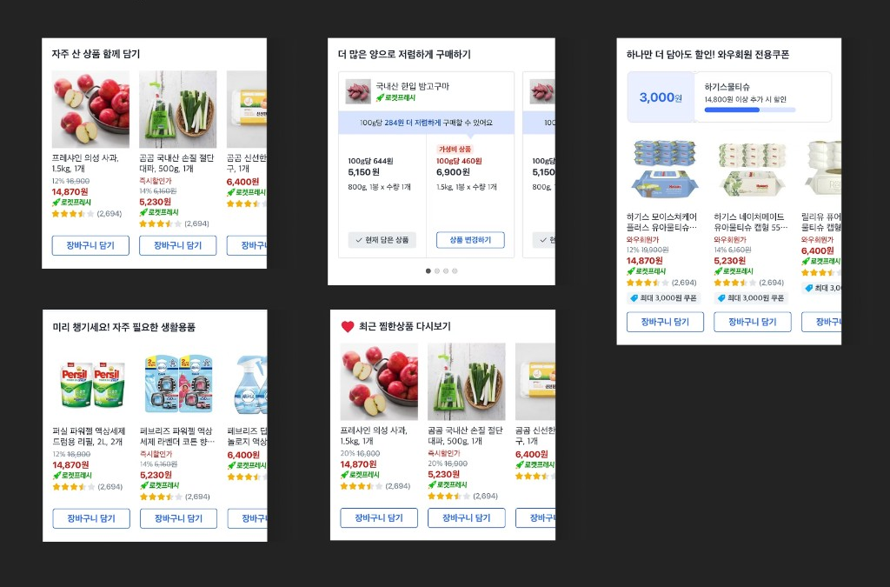
TOBE Under-threshold Flow on Cart
Cart warning → Interstitial with progress and recos → threshold met with wishlist follow-on → order and payment. The same frame carries the shopper from shortfall to checkout without dumping them on Fresh home.
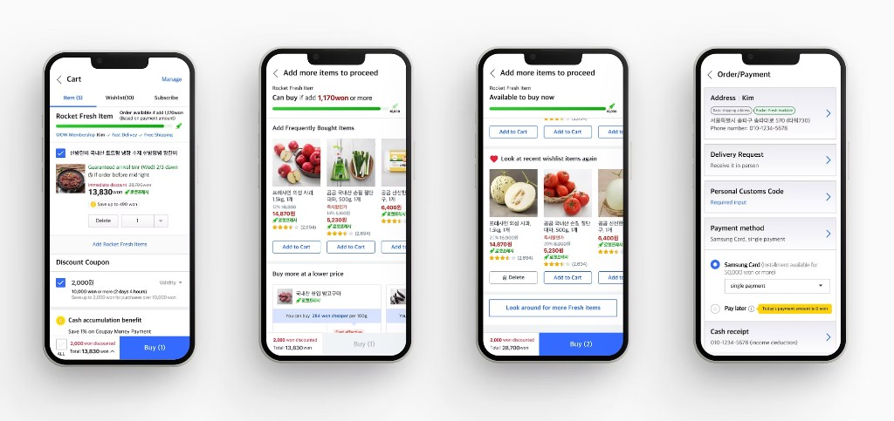
Expansion
Fresh Under-threshold Checkout for Direct Buy
After shipping under-threshold on Cart, we brought the same interstitial approach to Direct Buy on the Single Detail Page (SDP)—progress, recommendations, and add paths in one surface instead of treating Fresh home as the default answer. When someone taps Direct Buy with an under-threshold Fresh line item, the old pattern mostly blocked and redirected to Fresh home with little help choosing a small, relevant add-on. Redirecting to the full home still suits shoppers who want to browse and search broadly, but it is a weak fit for people who want a fast, guided nudge: an undifferentiated catalog makes it hard to close a small gap. Parity with Cart was the product goal for that second group.
From PDP → purchase sheet (Add to Cart / Direct Buy) → blocking modal with threshold gap and a single path to Fresh home—little help picking a small add-on to qualify.
Original Under-threshold Flow on Direct Buy
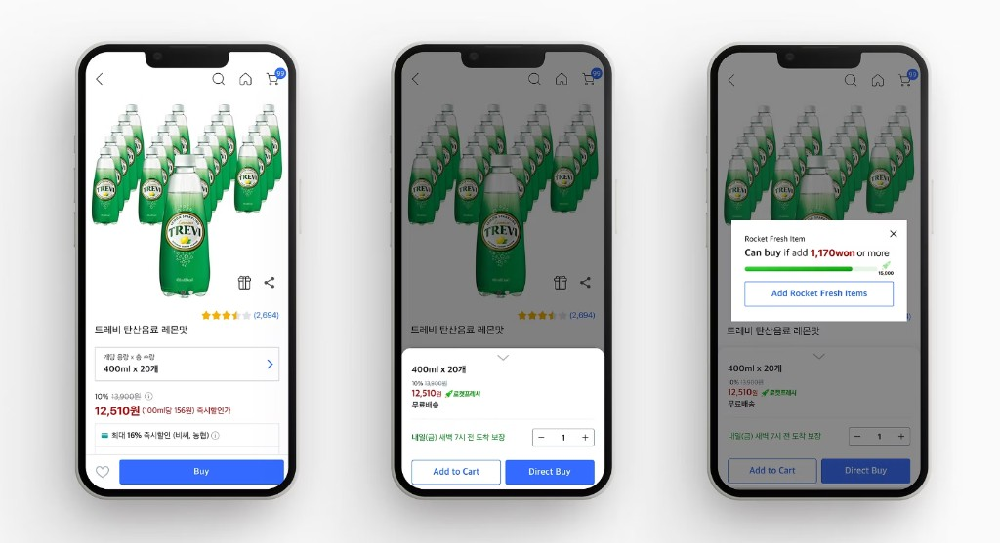
Expansion
Segmentation after three iteration rounds
We iterated three times to tighten item sanity filtering. The main shift was separating shoppers who want to browse Fresh home and search from those who want guidance on what to add. For under-threshold Direct Buy, we showed a highly personalized recommendation list to the latter, while still offering a Fresh home path for people who prefer a wider browse. That way, people could close the gap with items they already needed or wanted.
PDP with Direct Buy → same Interstitial frame as Cart (progress, FBI, bundle) → threshold cleared with wishlist follow-on → order and payment—no dead-end hop to Fresh home as the only option.
TOBE Under-threshold Flow on Direct Buy
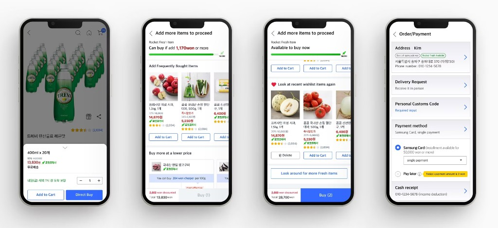
Expansion
All Retail Product Checkout
We then extended the interstitial to core retail checkout so shoppers could catch items they might have missed, reduce “forgot to add” follow-up orders, and lift units per order and AOV. We watched for UX friction in this funnel; usability testing showed no major blockers, an A/B test validated the change, and it shipped with strong business impact.
Original Retail Product Checkout Flow on Cart
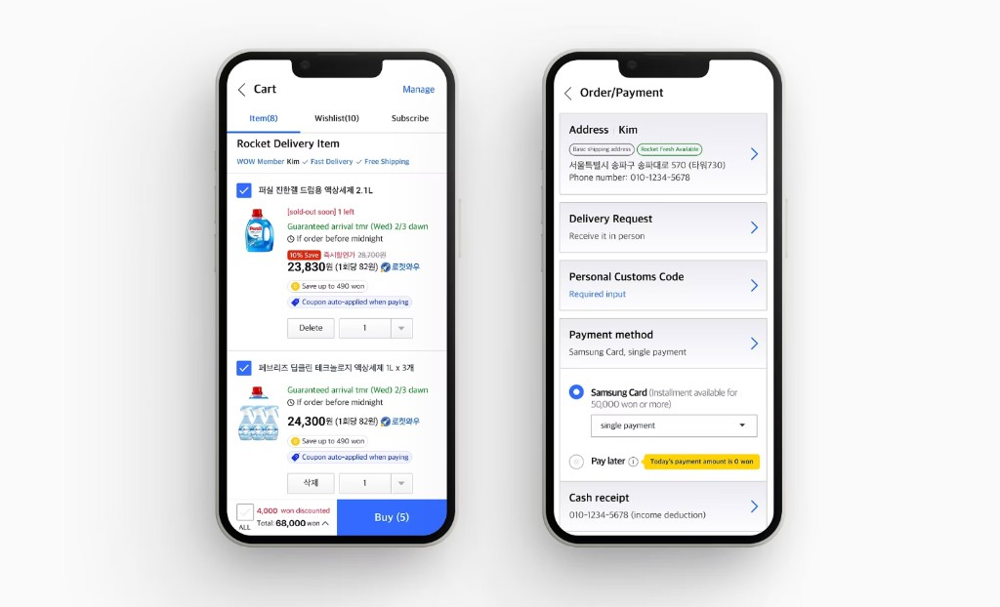
TOBE All Retail Product Checkout Flow on Cart
Cart → Check to shop economically interstitial (time-bound deals, frequently bought) → checkout with an updated total and line count.
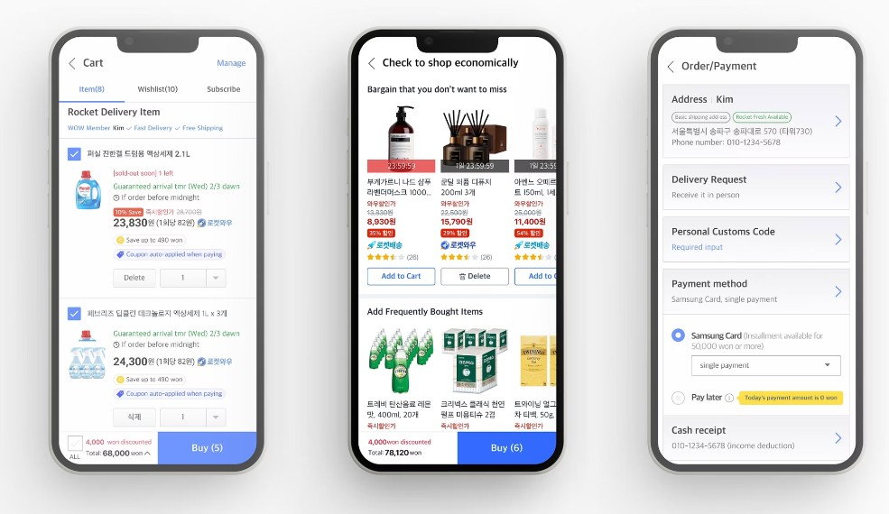
Expansion
All Retail Product Checkout for Direct Buy
We brought the same core interstitial to Direct Buy for shoppers already over threshold, surfacing items they might still want to add so they could bundle with the DB order. That pushed units per order and AOV; the modules leaned on what people typically buy together, including signals from the cart.
Original Retail Product Direct Buy Flow on SDP
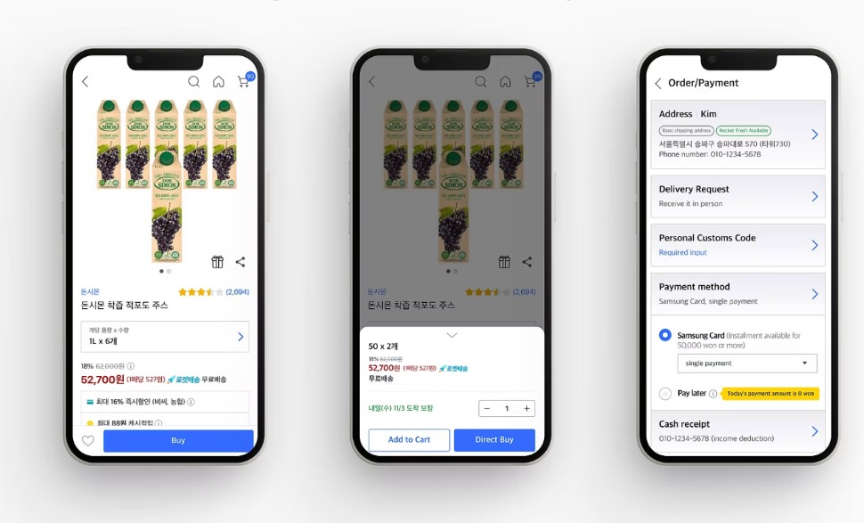
TOBE All Retail Product Direct Buy Flow on SDP
Direct Buy from SDP opens the same Check to shop economically interstitial so shoppers can align cart-line items and frequently bought picks before checkout.
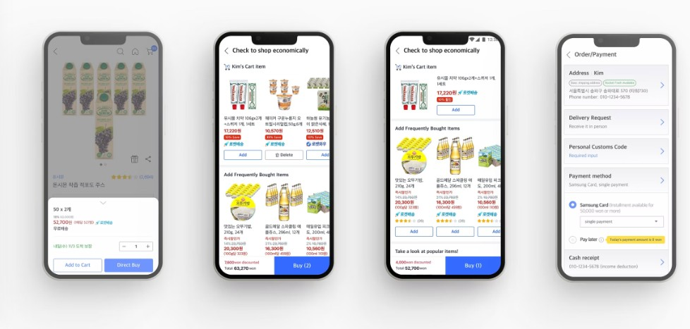
Expansion
Widget layout exploration
Explored horizontal layouts and module density so the interstitial feels familiar next to cart patterns.
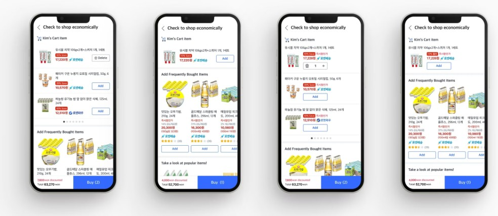
Layout and RDS alignment
I explored different widget layouts for this feature. I chose a horizontal approach because it looked most similar to the cart layout, so items can feel more familiar next to that pattern. While using Coupang’s Rocket Design System (RDS), I introduced components that fit the new behaviors within RDS conventions. That reduces cognitive dissonance for customers and helps engineering ship follow-on changes. I also designed distinct button treatments for this flow because quantity change was a natural place to let shoppers adjust line items with ease.
Button copy and quantity picker
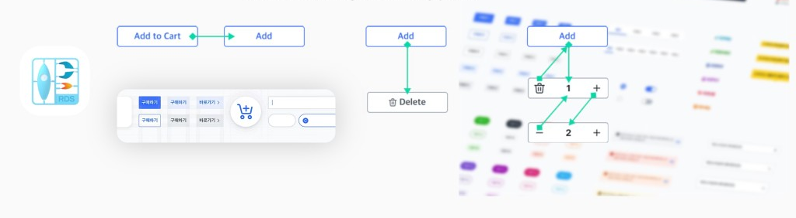
Impact
Applying the interstitial to Rocket Delivery products—the core of retail assortment—drove meaningful business impact.
2. Under-threshold checkout interstitial for Direct Buy
Fresh CPPU up significantly (+6.4%)
Fresh gross GPPU up significantly (+6.2%)
Fresh AOV neutral
Fresh quantity per customer down significantly
Fresh GMV per customer neutral
Fresh buyer conversion neutral
3. Checkout interstitial for all categories
iOS
Retail AOV +351 KRW (sitewide +55 KRW)
Conversion ~9.6%
Abandonment ~0.9% (est.)
Exposure ~0.6%
Buyer conversion drop-off smaller than AOS test (−0.03% sitewide)
AOS
Retail AOV +623 KRW (sitewide +195.2 KRW)
Key takeaways and reflection
This project taught me that the most impactful design solutions are born from a deep understanding of both the ideal user experience and the business metrics that drive profitability. It’s not about choosing one over the other; it’s about strategically connecting the two.
I learned that effectively influencing stakeholders and leadership teams begins with understanding their goals and priorities. While our approaches may differ, we all share the same ultimate goal: to deliver value to our customers. I learned how to identify this common ground, build trust, and align diverse teams toward a shared vision.
The project was a great lesson in leading a product with very limited resources and managing ambiguity. Starting with a small, focused initiative in one funnel, we were able to demonstrate effectiveness and value. From there, I learned how to build a roadmap, manage stakeholder feedback, and drive coordination across multiple teams in different countries and time zones. The recommendation-logic team in San Francisco, the development organization in Shanghai, China, and the POSE organization in Seoul had to find ways to efficiently work, collaborate, and manage multiple national teams at different times, autonomously and collaboratively. This experience solidified my ability to work autonomously, yet collaboratively, to turn initial ambiguity into a clear, data-informed product strategy.